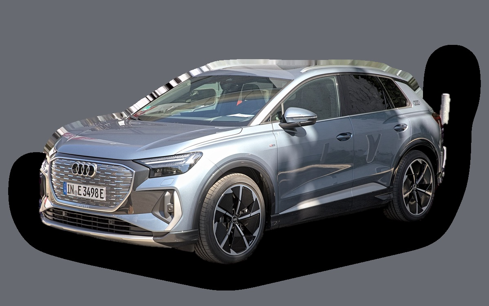
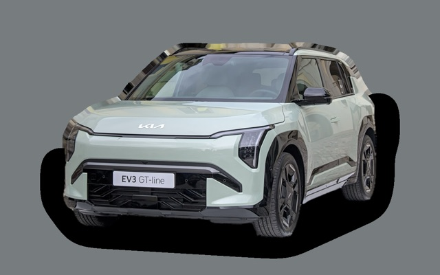
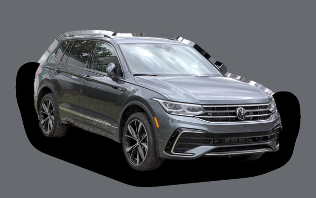
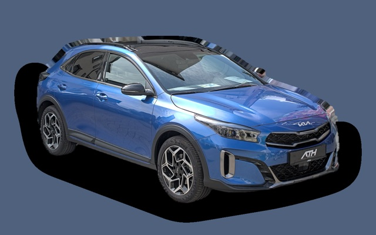
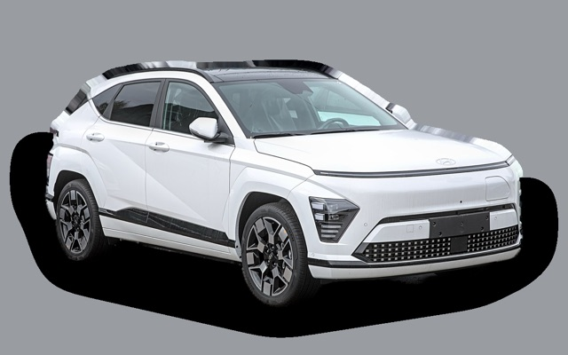
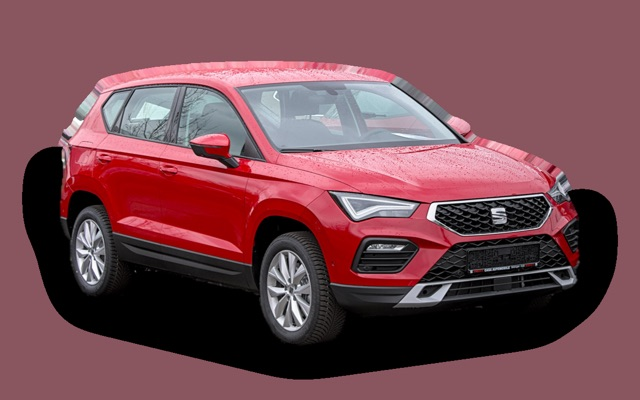

Vad kostar en Audi Q4 e-tron per månad?
En Audi Q4 e-tron från 2023 kostar cirka 3 646 kr i månaden, allt inräknat.


Månadskostnad per årsmodell
| Årsmodell | Version i beräkningen | Pris | Per månad | Betyg |
|---|---|---|---|---|
| 2026 | 45 e-tron 286, Proline | 640 000 kr | 6 294 kr | C |
| 2023 | 45 e-tron 286, Proline | 399 000 kr | 3 646 kr | A |
Räknat på 5 års ägande och 1 250 mil per år, med bränslepriser från 2026-10-22. Månadskostnaden innehåller värdeminskning, drivmedel, service och reparationer, försäkring och fordonsskatt.
Så fördelas kostnaden för en 2023:a
- Värdeminskning: 2 058 kr/mån
- Drivmedel: 429 kr/mån
- Service och reparationer: 399 kr/mån
- Försäkring: 730 kr/mån
- Fordonsskatt: 30 kr/mån
Leasa eller köpa ny?
Audi Privatleasing erbjuder Q4 e-tron performance Proline från 5 795 kr i månaden i 36 månader och 1 000 mil per år. Så mycket kostar det jämfört med att köpa samma bil ny för 640 000 kr och sälja den efter 36 månader, räknat på 1 250 mil per år och 5 procents ränta.
Leasa är billigast 2 502 kr mindre per månad, 90 072 kr på 36 månader.
| Per månad | Leasa | Köpa |
|---|---|---|
| Leasingavgift, 1 250 mil per år | 6 065 kr | – |
| Uppläggnings- och aviavgift | 73 kr | – |
| Värdeminskning | – | 6 189 kr |
| Ränta på pengarna, 5 % | – | 2 202 kr |
| Service och reparationer | ingår | 249 kr |
| Drivmedel | 421 kr | 421 kr |
| Försäkring | 867 kr | 867 kr |
| Fordonsskatt | 30 kr | 30 kr |
| Totalt per månad | 7 456 kr | 9 958 kr |
| Totalt på 36 månader | 268 416 kr | 358 488 kr |
Du kör 250 mil mer per år än erbjudandet räknar med. Märkets pris för fler mil: 270 kr i månaden. Audi Privatleasing: Q4 e-tron performance Proline, 36 månader, 1 000 mil per år, service ingår, rörlig avgift som följer räntan. Uppläggningsavgift 495 kr och aviavgift 59 kr i månaden. Källa: privatleasing.audi.se, avläst 26 oktober 2026, gäller till och med 31 oktober 2026.
Köpa: 640 000 kr för en ny bil i samma version, och 417 194 kr tillbaka när du säljer den efter 3 år. Restvärdet bygger på annonspriserna för 3 år gamla bilar, justerat för att du kör 3 750 mil på 3 år i stället för typiska 6 100 mil. Räntan är vad pengarna kostar: ränta på ett billån, eller räntan du går miste om på sparade pengar. Drivmedel, försäkring och skatt är desamma. Övermil och onormalt slitage betalas när leasingbilen lämnas tillbaka, och byter du in en köpt bil hos en handlare får du oftast mindre än annonspriset.
Räkna med din egen körsträcka och ränta · Alla leasingbilar jämförda
Begagnatpriser i annonser
| Årsmodell | Medianpris | Annonser | Typiskt miltal |
|---|---|---|---|
| 2026 | 569 400 kr | 4 | 700 mil |
| 2025 | 529 000 kr | 4 | 2 200 mil |
| 2024 | 436 800 kr | 16 | 4 800 mil |
| 2023 | 399 900 kr | 43 | 6 100 mil |
| 2022 | 369 000 kr | 7 | 8 600 mil |
| 2021 | 404 300 kr | 5 | 9 400 mil |
Medianpriset i svenska annonser per årsmodell i oktober 2026 (källa: Blocket, AutoUncle, BilKoll, Danmark). Annonspriser är utgångspriser, och slutpriset kan bli lägre.
Motorer och versioner
| Motor | Drivmedel | Effekt | 0–100 km/h | Förbrukning (WLTP) | Räckvidd | Årsmodeller | Pristillägg |
|---|---|---|---|---|---|---|---|
| 45 e-tron 286 | El | 286 hk | 6,7 s | 16,6 kWh/100 km | 560 km | från 2021 | – |
| 55 e-tron quattro 340 | El | 340 hk | 5,4 s | 17,8 kWh/100 km | 520 km | från 2021 | +95 000 kr |
- Utrustning: Proline, S line (+36 000 kr)
Fakta
- Kaross
- SUV
- Årsmodeller
- sedan 2021
- Nypris från
- 640 000 kr
- Bagage
- 520 liter
- Euro NCAP
- 5 av 5 stjärnor
- Nybilsgaranti
- 3 år
- Driftsäkerhet
- 4,5 av 5
- Helförsäkring, uppskattning
- 11 000 kr/år
- Service, uppskattning
- 2 900 kr/år
Fördelar och nackdelar
Fördel
Premiumkänsla och tyst på motorväg.
Nackdel
Högt inköpspris och snabb värdeminskning.
Liknande bilar

Kia EV33 677 kr/mån som 2026:a
Volkswagen Tiguan II3 705 kr/mån som 2020:a
Kia XCeed3 582 kr/mån som 2023:a
Hyundai Kona3 562 kr/mån som 2023:a
Seat Ateca3 734 kr/mån som 2020:a- Volkswagen T-Roc3 542 kr/mån som 2023:a
Uppdaterad 2026-10-28 · annonsdata okt 2026